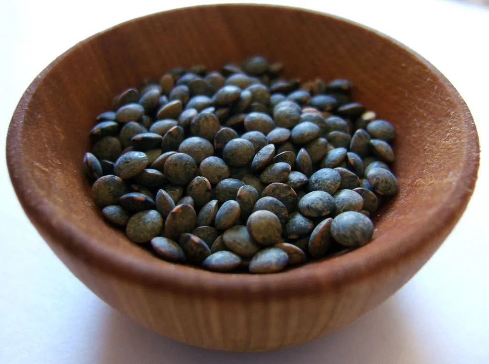
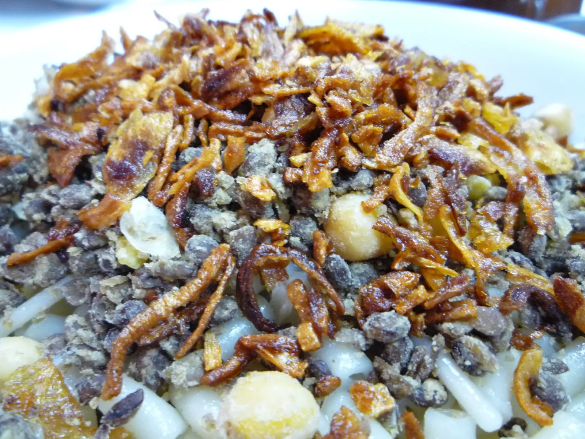
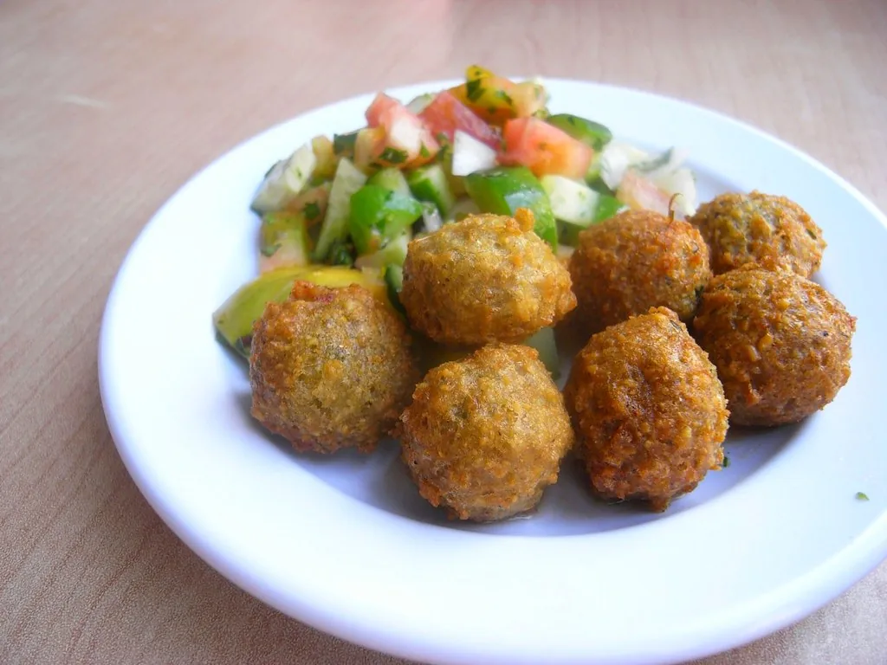
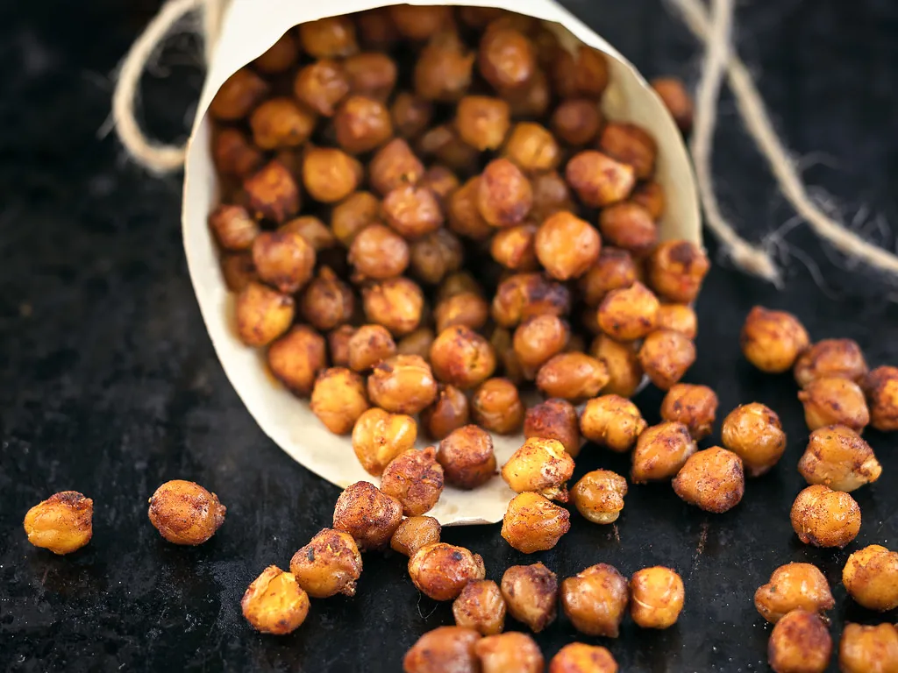
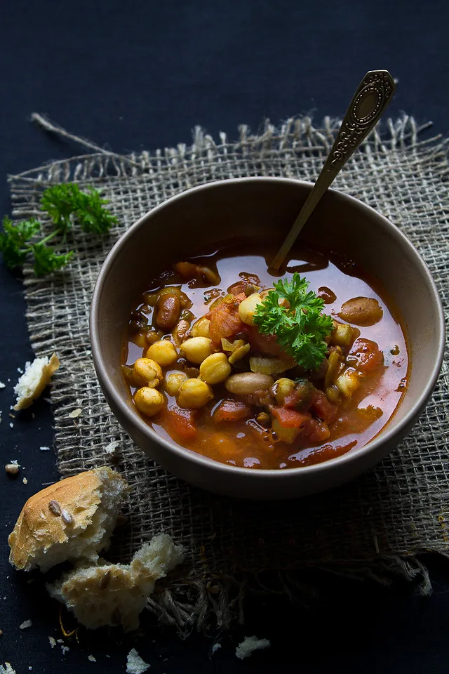
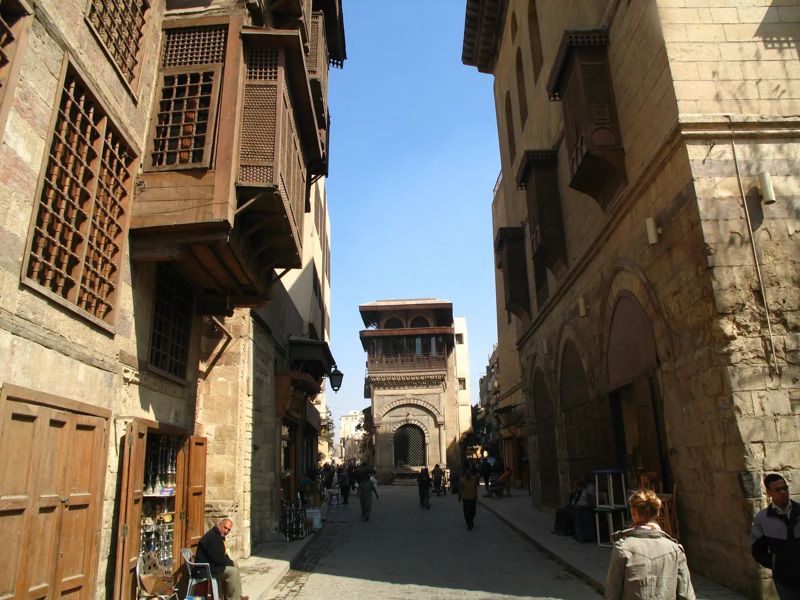
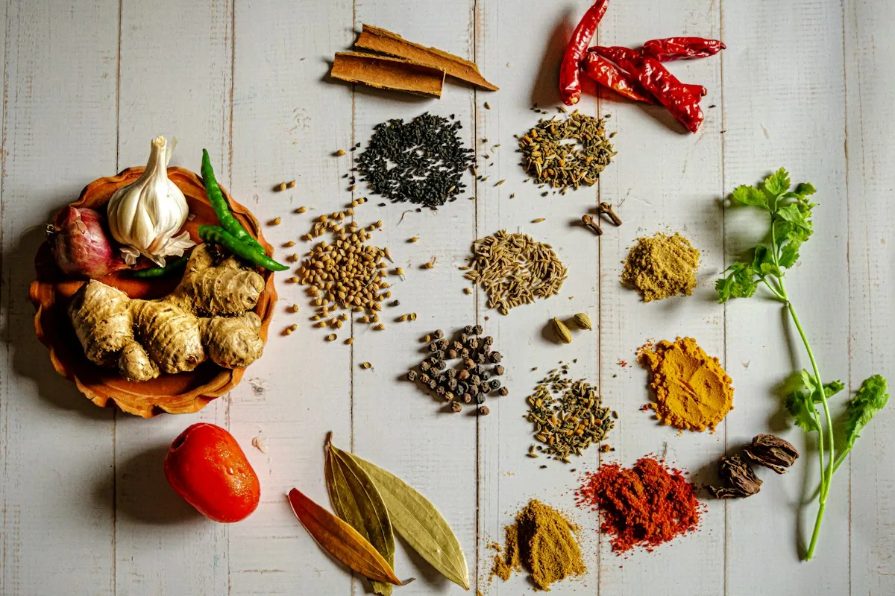
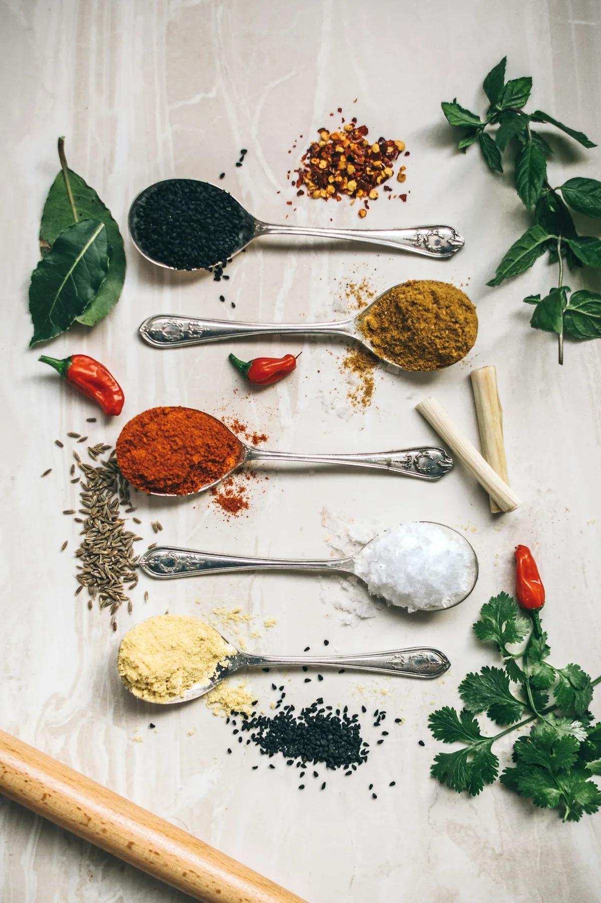
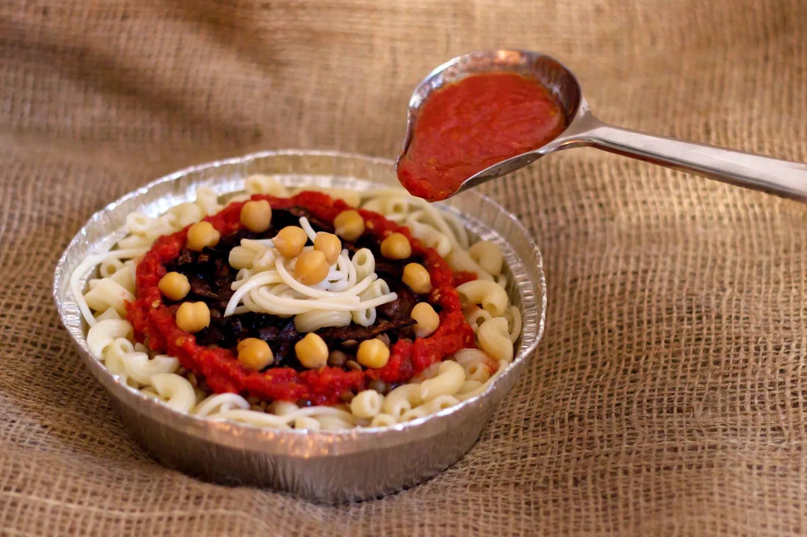

Lentils
Brown lentils, cooked soft — the hearty heart of the bowl.
Koshary Albashawat · Shubra, Taif · The taste of Egypt
Egypt's national dish, served the way Cairo serves it — rice, macaroni, lentils and chickpeas under spiced tomato sauce and a snowfall of crispy fried onions. Taif's most famous koshary house, at prices every pocket can afford.
Muslim Bin Mujafal Subaih Street, Shubra, Taif




Koshary, rice, macaroni, lentils, chickpeas, tomato sauce, crispy onions — Egypt's national dish, in Taif.
01 — Our koshary
Koshary is Egypt's national dish — a happy pile-up of rice, macaroni, lentils and chickpeas, finished with a spiced tomato sauce and a snowfall of crispy fried onions. It is the food of Cairo's streets and family tables alike: filling, cheap, and loved by everyone.
In Shubra, Taif, Koshary Albashawat serves that same Cairo bowl — and Taif has noticed. Travel guides describe it as “the most famous and largest Koshari restaurant in the Kingdom”, and more than 1,900 reviewers agree it is worth the trip.
“The most famous and largest Koshari restaurant in the Kingdom.”
— as described in travel guides

02 — Inside the bowl
Every bowl is built from the same six layers — the recipe Egypt has eaten for generations.

Brown lentils, cooked soft — the hearty heart of the bowl.

Cumin, chilli and warm spices — the heat in the tomato sauce.

Fresh herbs and chilli, measured by hand — never from a packet.

04 — The signature bowl
There is no shortcut to a good koshary bowl. Each layer is cooked separately, then stacked in the same order every time — so every spoonful has a bit of everything.
The base, fluffy and warm.
Elbow and spaghetti, cooked just past soft.
Brown lentils for body and earthiness.
Whole chickpeas, tender and nutty.
Spiced, garlicky and warm — ladled over the top.
Fried until golden — the crunch that finishes it.
05 — How to order
Ring +966 53 008 9565 and tell us your bowl size and any extras.
Call nowLayer by layer at the counter — rice, macaroni, lentils, chickpeas, sauce, onions.
Pick it up on Muslim Bin Mujafal Subaih Street — or ask about delivery when you call.
Find us06 — Gallery
Koshary counters, Cairo streets and Egyptian tea — tap any photo to see it larger.
Photographs show koshary and Egyptian food culture; they are illustrative, not the restaurant's own dishes.
07 — Why locals choose
Reviewers call the koshary authentic and delicious — Egypt's national dish, done properly.
Very cheap, modest prices — a budget favourite for residents and visitors alike.
A clean restaurant with good decoration — a place people are happy to sit in.
Friendly, fast service — the counter keeps the queue moving.
Popular with Taif's residents and with visitors passing through the city.
Themes drawn from public Google and TripAdvisor reviews. Ratings: 3.9/5 (Evendo, Google-sourced, 1,941 reviews), 4.2/5 (TripAdvisor, 15 reviews), 4.0 (Rehlat).
08 — Visit
Muslim Bin Mujafal Subaih Street, Shubra, Taif 26513
Hours are not published — call for today's hours.
09 — FAQ
Koshary is Egypt's national dish: rice, macaroni, lentils and chickpeas, topped with spiced tomato sauce and crispy fried onions. It is filling, cheap, and eaten all over Egypt.
Yes — the classic bowl is rice, macaroni, lentils, chickpeas, tomato sauce and fried onions, with no meat. If you have an allergy or a dietary question, ask the restaurant when you call.
Prices are not published online. Call +966 53 008 9565 and the restaurant will tell you today's prices — reviewers consistently describe them as very cheap.
Delivery is not listed anywhere for this restaurant. Call +966 53 008 9565 and ask — the staff will tell you what is possible today.
Muslim Bin Mujafal Subaih Street, in the Shubra district of Taif (postcode 26513). The map above points to the restaurant's listed location.
Opening hours are not published anywhere. Call +966 53 008 9565 for today's hours before you set off.
Call the restaurant, pick your bowl, and taste why Taif keeps coming back.